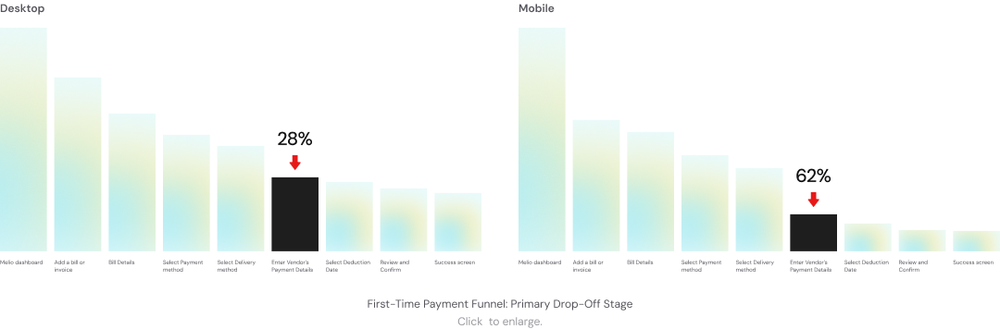
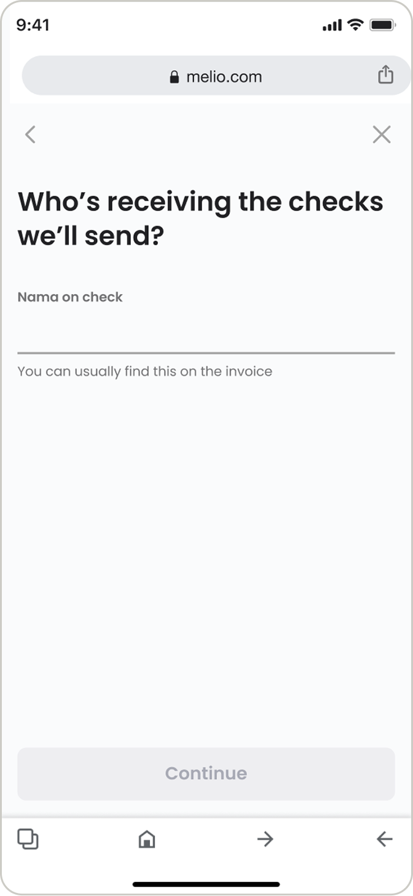
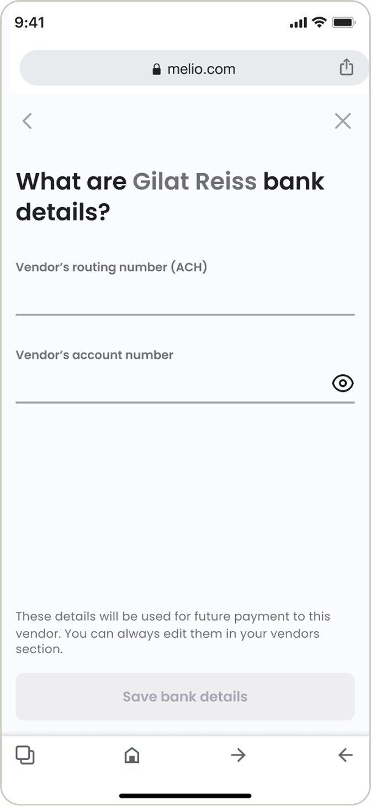

The Challenge
Prioritize mobile users' key actions, surface essential information, and pinpoint where the drop-off occurs in the funnel.
My Role
Collaborating with a cross-functional platform team, I led the mobile web redesign — mapping flows and bugs, conducting mobile UX research, owning end-to-end product design, running design reviews, and coordinating closely with developers.
Overview
Melio is an accounts payable tool for small businesses — letting them pay vendors, suppliers, and contractors flexibly to optimize cash flow. As Melio shifted its focus from direct SMB acquisition to a white-label platform for enterprise partners, mobile web became a core product offering. Supporting that pivot meant closing a significant conversion gap between the mobile and desktop experiences.
The problem
First-time payment (FTP) conversion was significantly lower for users who registered on mobile web than on desktop.
Mobile
6%
Desktop
34%
*% Completed a first payment - Conversion rate before optimization
Research
Discovery questions
Melio runs on both desktop and mobile web, each needing its own design considerations. To optimize mobile, we focused on two questions:
- •Who are our primary mobile users, and what motivates them to engage with their Melio accounts on mobile devices?
- •How many of our users successfully complete end-to-end flow, and at which stage do drop-offs occur in the process?
We pulled the following data:
82% are SMB owners
Usually paying instant bills and tracking payments on mobile.
87% of vendors
Are added inside the "Pay a Bill" flow, not the dedicated "Add a Vendor" flow.
72%
Pay by bank transfer
28%
Pay by credit card
64%
Payments delivered by bank transfer
32%
Payments delivered by check

The biggest mobile drop-off: 'Enter Vendor's Payment Details.'
Mapping user flows
A thorough analysis of all user flows surfaced usability problems, inconsistencies, and bugs. Focusing on the core Pay a Bill flow revealed three critical problems:
01
Dead ends, no 'Back'
Users without the info get stuck at payment delivery and abandon the flow.
02
No exit warning
Leaving the screen resets progress without confirming the user's intent.
03
Progress loss
Entered information isn't saved, frustrating users who already typed a lot.
Enter vendor's payment delivery details screen.
Click to enlarge.


- 1.Main navigation — no 'Back' option.
- 2.Content — center-aligned content is hard to read when moving between screens.
- 3.CTA — inconsistent in position and style across screens, sometimes below the fold.
The Solution
Safe to exit, easy to read, consistent to navigate
Addressing these areas makes the mobile web experience clearer and easier to complete:
- •Add confirmation before destructive actions, like exiting a payment mid-flow.
- •Define responsive rules for components and layouts.
- •Ensure consistent design and clear navigation to reduce overload and confusion.
Together, these help users complete actions from start to finish — and lift conversion.
Screens Comparison: Before and after
Click to enlarge.


Before


After
- •Main navigation — 'Back' added to the top bar.
- •Content — a consistent grid layout across all screens.
- •CTA — fixed position across all screens, with consistent UI.
More key actions
Mapping the entire system, not just one flow


More examples (Before → Left, After → Right)
Click to enlarge.


What we improved
Every fix became a rule, not a patch
- •Fixed CTA: anchored the primary action for constant visibility.
- •Layout & responsiveness: clear content sections, defined per breakpoint.
- •Navigation: added clear paths where they were missing.
- •Consistency: standardized UI elements across the product.
- •Quality assurance: fixed critical bugs and improved accessibility.
impact
First-time payment conversion from mobile more than doubled
Before
6%
After
14%
Reflection
This project ran on funnel analytics and flow mapping rather than formal user research — the questions were pulled with the PM from the data, and the redesign was judged by the one number that mattered. It moved. What I'd examine next:
- •Did the 62% drop flatten — or just move downstream?
- •The 20-point gap to desktop: how much is context, how much is UX debt?
- •Does saved progress actually bring abandoners back?